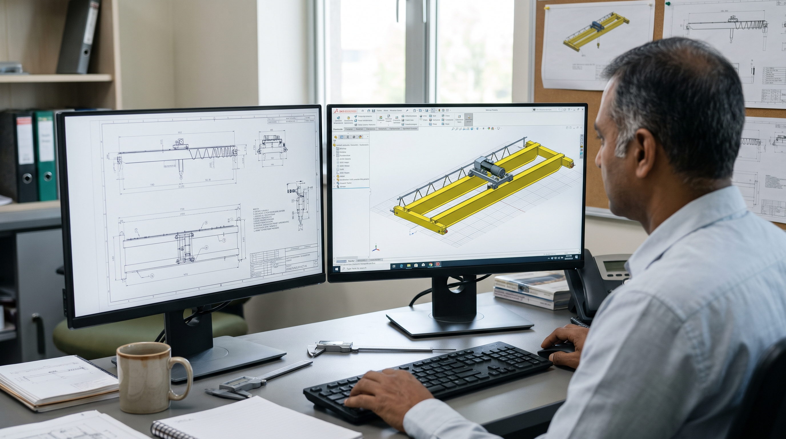

Structural & Mechanical Engineering
Advanced Crane Design, Stress Analysis, and Compliance Engineering

Rigorous Engineering for High-Performance Lifting Systems
At HEBENER, we don't just sell crane systems—we engineer them from the ground up to solve complex material handling challenges. Guided by veteran leadership with over two decades of specialized expertise in the UAE, our engineering department provides end-to-end design, structural analysis, and compliance certification.
Whether optimizing wheel load distribution on existing gantry runways or designing custom double-girder overhead cranes for specialized indoor applications, our structural and mechanical experts verify every dimension, connection, and load path.
Our Technical Capabilities
3D CAD Modeling & Kinematics
Utilizing high-precision software to build comprehensive 3D models of crane assemblies, hoist machinery, and structural interfaces. We meticulously detail hoist trolley clearances, girder web-and-flange geometries, and travel drives, simulating exact kinematic motions to prevent installation interference and ensure smooth operational tolerances.
Structural FEM & Stress Analysis
Our engineers perform Finite Element Method (FEM) stress and deformation simulations to analyze complex load behaviors. We isolate and evaluate critical stress concentrations, shear forces, bending moments, and fatigue thresholds across the girder. This prevents deflection under dynamic loading and ensures the ultimate integrity of structural welding and joints.
International Codes & Standards
Design validation in strict accordance with recognized global Standards, ensuring precise classification of duty cycles (FEM/ISO Group classifications) and fatigue life. We engineering to conform with FEM (Fédération Européenne de la Manutention), CMAA (Crane Manufacturers Association of America), DIN, and BS/EN design rules, ensuring safe working loads (SWL) and rigorous factor-of-safety ratios.
Runway & Gantry Structural Civil Integration
We analyze the interface between the crane and the host building structure. By generating exact wheel load data, horizontal/torsional forces, and buffer impact loads, we enable civil engineers and contractors to evaluate runway beam deflection, brackets, columns, and foundation requirements, safeguarding structural alignments.
Dynamic Wheel & Structural Fatigue Calculation
Advanced